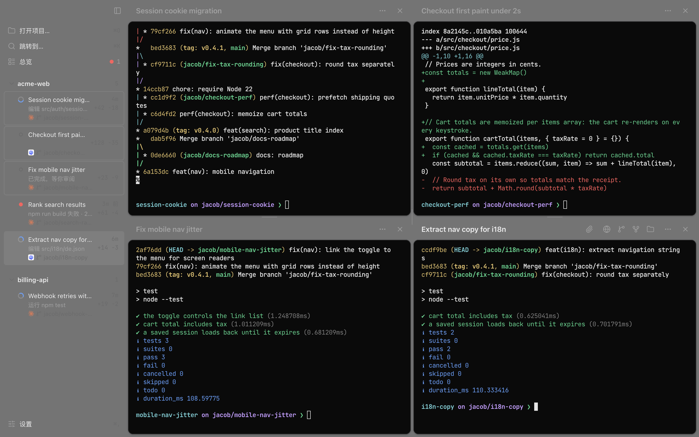
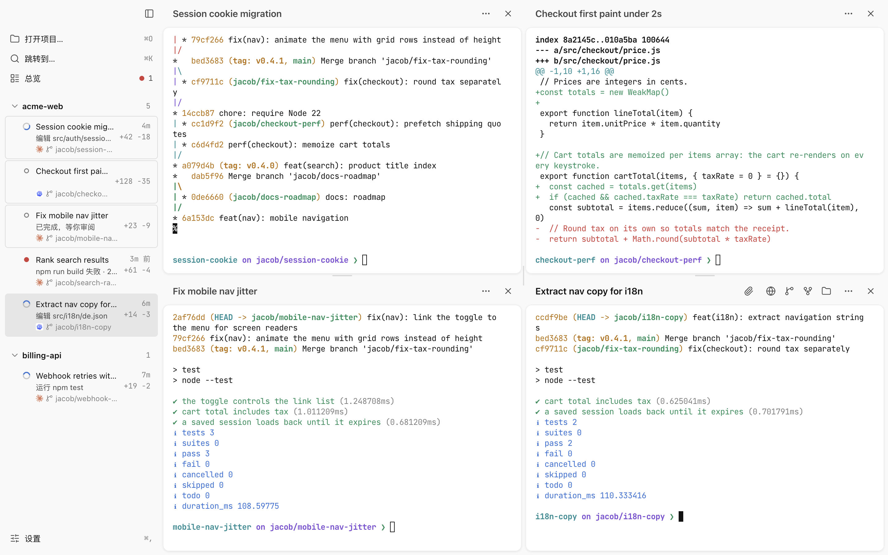
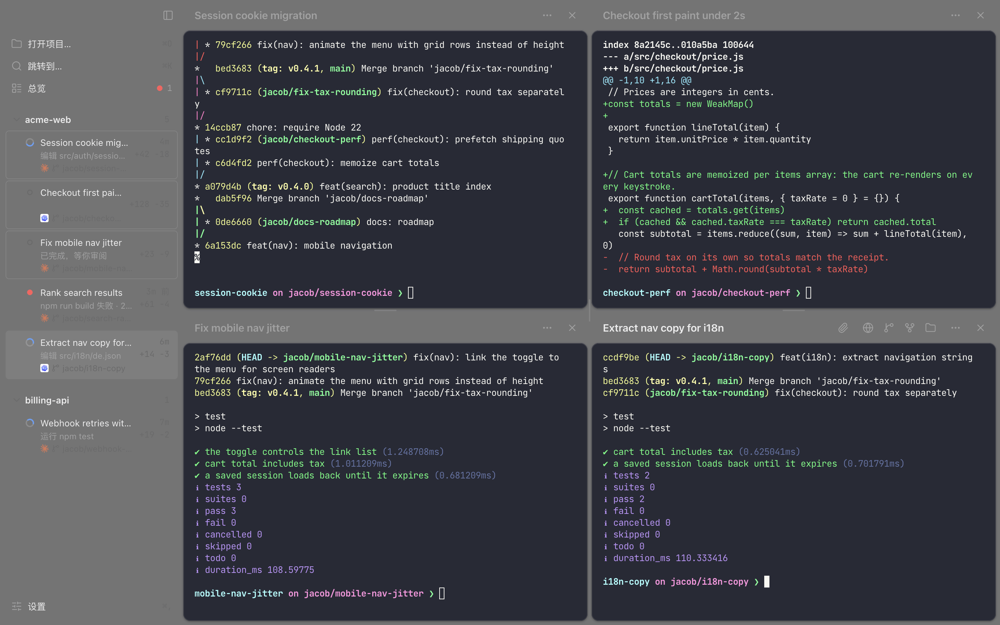
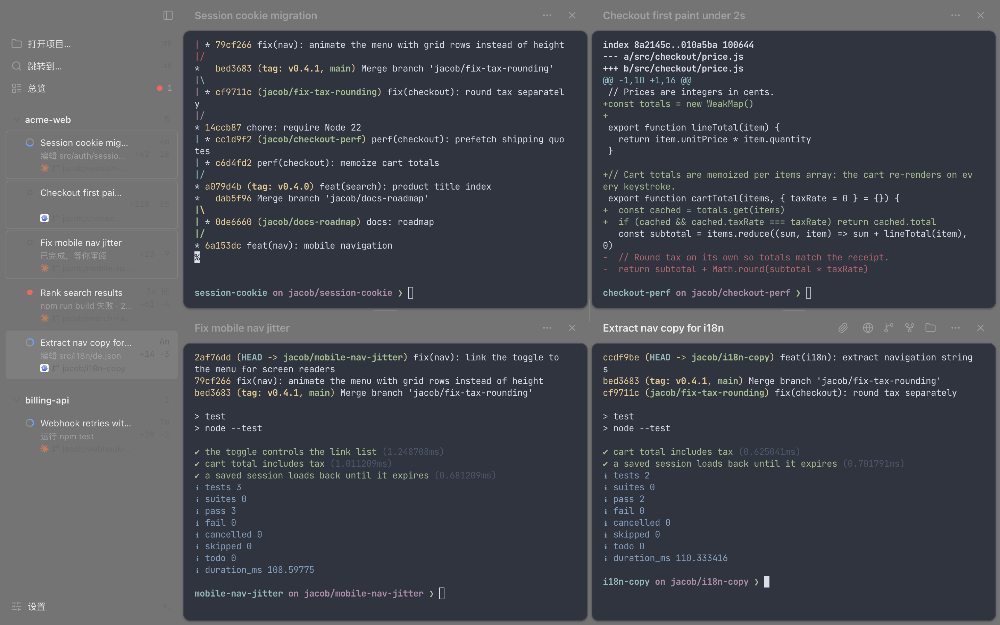
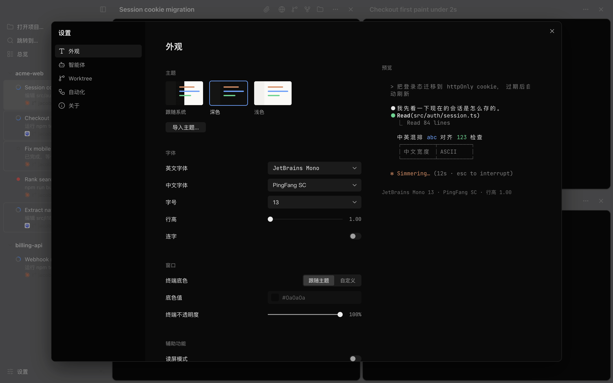
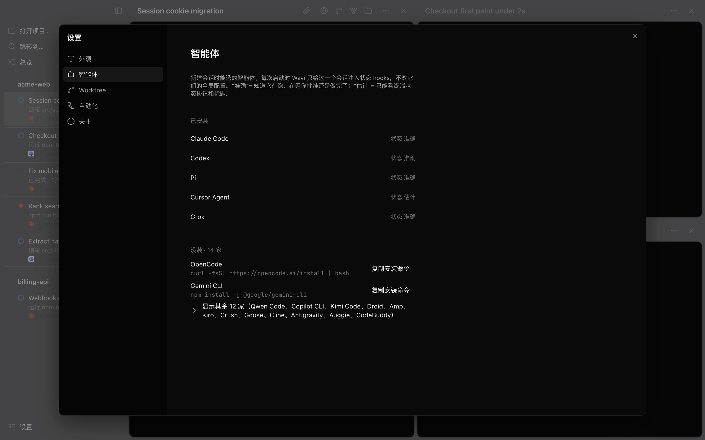
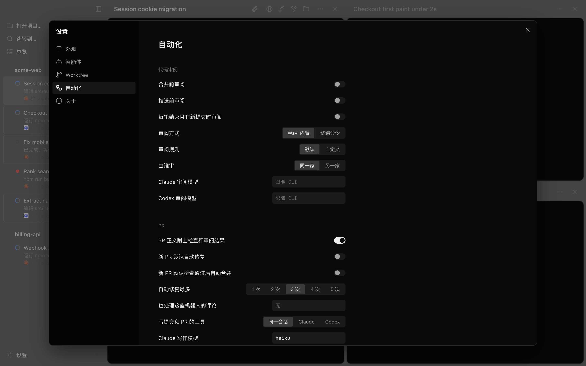
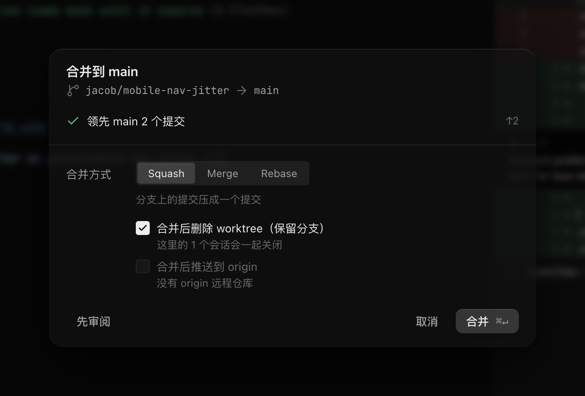
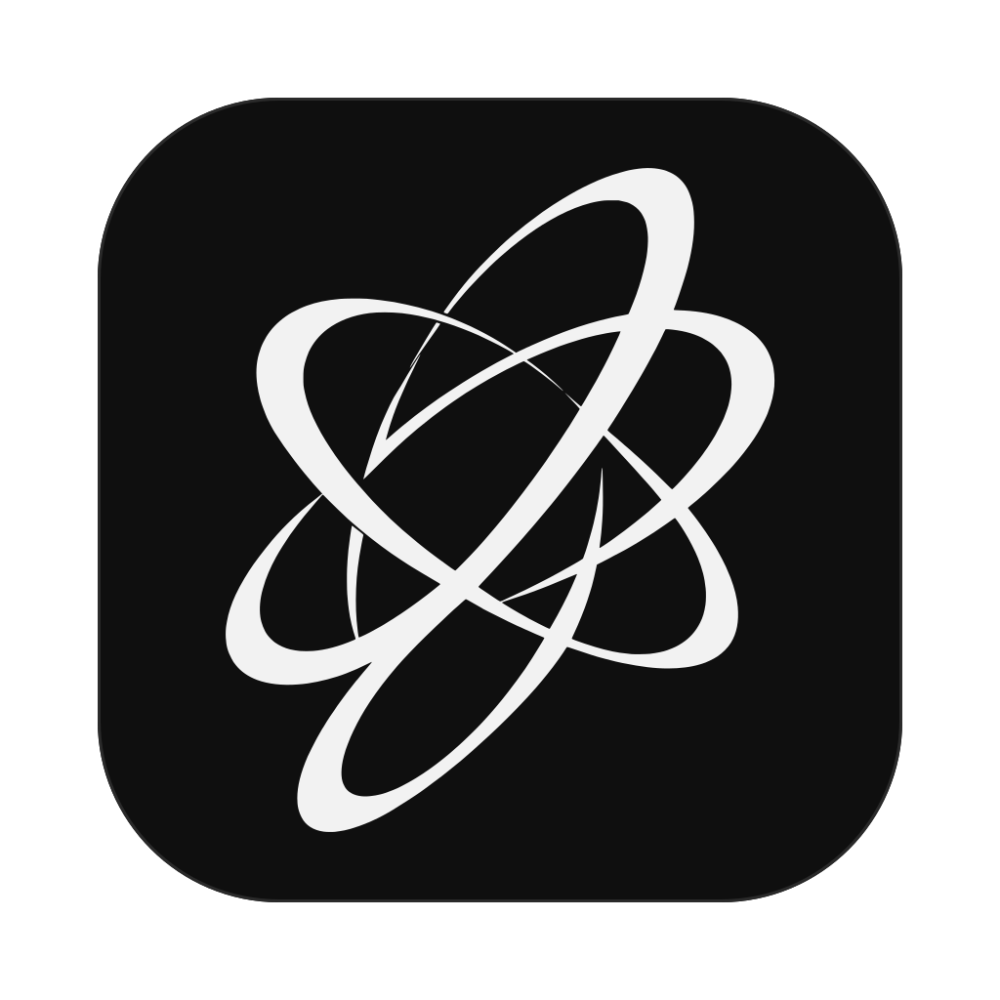

2 need you.
⌘J
WAVI
Jump to it.
Answer it.
It keeps going.
It keeps going.
Four threads. One screen.
Make it yours.
Import
any theme.
any theme.
0 agents.
One window.
Review.
Auto-review.
Auto-PR.
Auto-commit.
Merge.
Every branch
comes home.
comes home.

WAVIDownload for macOS